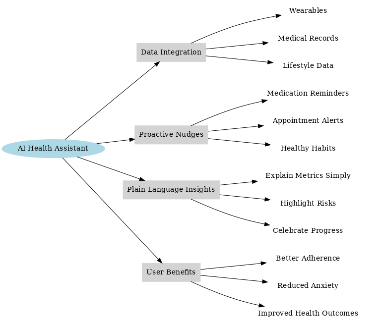
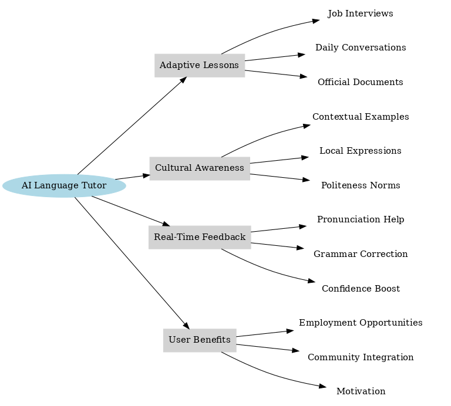
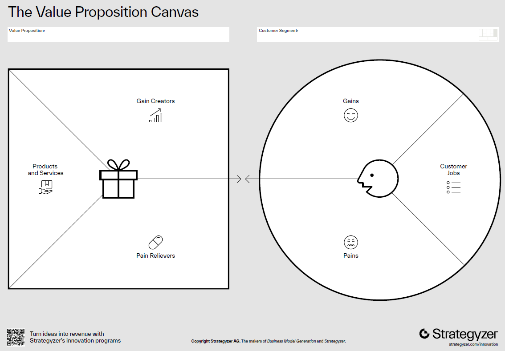

Module 2: Customer & Idea Discovery with AI#
Blueprint Piece: Customer Persona + Value Proposition Canvas
Module Overview#
Block |
Topic |
|---|---|
Workspace warm-up |
Feed Blueprint Piece 1 + re-brief AI cofounder |
2.1 |
Customer Development with AI |
2.2 |
Design Thinking with AI |
2.3 |
Value Proposition Design |
📋 |
Blueprint Checkpoint 2: Customer Persona + Value Proposition Canvas |
Workspace Warm-Up#
Before starting this session, open your AI Cofounder Workspace and paste in your completed Strategic Positioning Statement from Module 1. Then send this message:
Reference Prompt:
I have just shared my Strategic Positioning Statement with you. Today we are going to
focus on understanding my customer deeply, who they are, what they struggle with, and
what a compelling solution looks like from their perspective. Before we start, what is
the most important thing you would want to know about my target customer that is not yet
captured in the positioning statement?
Use the AI’s question to sharpen your thinking before diving into the session content.
2.1 Customer Development with AI#
Customer development is the practice of getting out of the building, leaving your assumptions behind and learning directly from potential customers what their real problems are, how they currently solve them, and what a genuinely valuable solution would look like. It is the antidote to building something nobody wants.
Developed by Steve Blank and popularized through the Lean Startup movement, customer development is built on a simple but powerful premise: your business plan is a set of hypotheses, and customers are your testing ground.
Note
AI does not replace real customer conversations. But it dramatically accelerates and deepens the preparation for those conversations, and it can help you simulate, analyze, and synthesize what you learn from them.
2.1.1 The Customer Discovery Process#
In a product development model, customers are only sought after a product has been fully developed and launched, while the customer development model seeks them out from the very beginning to validate assumptions.
Your Customers Are Your Co-Founders: Build what customers actually want, not what you think they want.
The Problem: Many startups fail due to lack of market need
The Solution: Systematic customer discovery, validation, and creation
AI Advantage: Simulate customer interactions before talking to real people
Quote: “Get out of the building!” - Steve Blank
Customer development follows four stages:
Customer Discovery — Identifying who your customer is and what problem they have.
Customer Validation — Testing whether your solution hypothesis resonates with real customers and they would pay for it.
Customer Creation — Building demand and growing a customer base.
Company Building — Transitioning from a startup to a scalable organization.
Key Insight:
Each phase has specific hypotheses to test and metrics to track.
AI Enhancement:
Use AI to accelerate hypothesis generation, interview preparation, and pattern analysis.
In this program, we focus on Customer Discovery, the most relevant stage to early planning and most amenable to AI assistance.
2.1.2 AI-Powered Customer Research#
Before you speak to a single real customer, AI can help you build a well-grounded starting hypothesis about who your customer is and what they struggle with. This is not a substitute for real interviews, but it dramatically improves the quality of those interviews by helping you ask sharper questions.
Research activities AI can accelerate:
Segment identification: Who are the most likely early adopters? What subgroups exist within your target market?
Pain point synthesis: What problems do people in this segment commonly report online? What do they complain about on forums, reviews, and social media?
Competitive gap analysis: What solutions are people currently using, and what frustrations do they express about those solutions?
Interview guide development: What questions would surface genuine customer insights rather than confirming your existing assumptions?
Reference Prompt:
Based on my target customer segment - [paste your segment description from Module 1] -
do the following:
1. Identify three distinct sub-segments within this group, ranked by likelihood of being
early adopters of my solution.
2. For each sub-segment, list three pain points they are most likely to experience in
relation to [your problem area].
3. Suggest five interview questions I should ask real customers to test whether my
problem hypothesis is correct. Avoid leading questions.
2.1.3 Simulating Customer Interviews with AI#
One of the most powerful applications of AI in early-stage entrepreneurship is customer persona simulation, that is, using AI to role-play as a specific customer type so you can stress-test your problem hypothesis before investing time in real interviews.
This is not a replacement for talking to real people. But it is an excellent preparation tool: it surfaces assumption gaps, reveals questions you hadn’t thought to ask, and helps you develop interview instincts before you are in the room with a real customer.
Reference Prompt:
I want you to role-play as my target customer. Define the persona, including:
Name: [give them a name]
Role/Background: [e.g., "a 38-year-old independent restaurant owner in Southwest Florida
with two locations and no dedicated marketing staff"]
Current behavior: [how they currently deal with the problem you are solving]
Key frustrations: [what they find most painful about the current situation]
Stay completely in character. I will ask you questions as if I am conducting a customer
discovery interview. Begin by telling me about a typical week at work, in your own words.
Run 5–7 questions. Then debrief with:
Step out of character. As my AI cofounder, what did this simulation reveal about my
assumptions? What surprised you? What questions should I ask differently with a real
customer?
2.2 Design Thinking with AI#
Design thinking is a human-centered methodology for solving problems. It complements customer development by adding structured creativity, moving from understanding a customer’s world to generating and testing solutions that genuinely address it. The five stages of design thinking provide a rigorous framework for this process.
2.2.1 The Five Stages of Design Thinking#
Empathize → Define → Ideate → Prototype → Test
In this module, we focus on the first three stages, the ones most relevant to early-stage planning and most enhanced by AI.
Stage 1: Empathize - The Empathy Map#
An Empathy Map organizes what you know (or hypothesize) about your customer into four dimensions: what they Say, what they Think, what they Do, and what they Feel. It forces you to move beyond demographics and into lived experience.
Quadrant |
Question |
Example for a Restaurant Owner |
|---|---|---|
Says |
What does the customer say out loud about this problem? |
“I don’t have time to manage social media” |
Thinks |
What do they privately believe or worry about? |
“If my competitor gets more online reviews, I’ll lose business” |
Does |
What actions do they currently take? |
Posts sporadically on Facebook, relies on word of mouth |
Feels |
What emotions drive their behavior? |
Overwhelmed, worried about irrelevance, proud of their food |
When to Use:
Early product/service development.
Designing new features.
Evaluating existing products.
Derived from the Empathy Map:
Pains: frustrations, obstacles, risks customers want to avoid.
Gains: outcomes, benefits, and desires customers want to achieve.
Reference Prompt:
Build an Empathy Map for my primary customer persona. Use the following format:
- Says: [3 verbatim-style quotes this person might say about the problem]
- Thinks: [3 beliefs or private concerns they hold]
- Does: [3 observable behaviors related to the problem]
- Feels: [3 emotions that shape their relationship to this problem]
Then list their top 3 Pains and top 3 Gains.
Stage 2: Define - The Problem Statement#
After empathizing, design thinking requires you to consolidate what you have learned into a sharp, human-centered problem statement, sometimes called a Point-of-View (POV) statement.
The POV formula:
[Customer] needs a way to [need/goal] because [insight about why].
Example:
Independent restaurant owners need a way to maintain a consistent, professional online presence without hiring dedicated marketing staff, because their time and attention are entirely consumed by daily operations and they cannot afford to lose the trust-building that happens online.
This is different from a product requirements statement. It describes the customer’s need, not your solution, preserving creative space for ideation.
Reference Prompt:
Based on the Empathy Map we built, write three Point-of-View (POV) problem statements
using this format: "[Customer] needs a way to [need] because [insight]."
Each one should capture a different angle on the problem. Then recommend which POV
statement best sets up a compelling solution space, and explain why.
Stage 3: Ideate - Generating Solutions#
Ideation is the generative stage of design thinking. The goal is to produce a wide range of possible solutions before evaluating any of them. Premature evaluation kills creative potential, because the best ideas often emerge from the fifth or sixth option, not the first.
AI is exceptionally well-suited to ideation support: it can generate variations rapidly, challenge self-imposed constraints, and introduce analogies from other industries that human brainstorming rarely surfaces.
Three AI-enhanced ideation techniques:
SCAMPER#
SCAMPER is a structured brainstorming technique that generates ideas by applying seven transformations to an existing product, service, or process:
Letter |
Operation |
Guiding Question |
|---|---|---|
S |
Substitute |
What components could be replaced with something better? |
C |
Combine |
What if we merged this with another product or service? |
A |
Adapt |
What ideas from other industries could we apply here? |
M |
Modify / Magnify |
What if we dramatically scaled one feature up or down? |
P |
Put to other uses |
Who else could use this, or in what other context? |
E |
Eliminate |
What could we remove to make this simpler or more focused? |
R |
Reverse / Rearrange |
What if we flipped the model — the customer becomes the provider? |
Reference Prompt:
Apply the SCAMPER technique to my current solution concept: [brief description of your
idea]. For each of the seven operations, generate one concrete and plausible idea.
Then identify the two most promising ideas from the full set and explain why they
deserve further exploration.
Mind Mapping with AI#
A mind map starts from your core problem or solution concept and radiates outward through associated ideas, connections, and sub-problems. AI can accelerate this by rapidly expanding branches you would not have naturally explored.
Mind Map Examples for AI-Based Startups
Mind Map 1: AI Personal Health Companion

Mind Map 2: AI-Powered Language Tutor for Immigrants

Reference Prompt:
Create a mind map outline for my company concept: [your concept]. Start from the central
idea and expand into at least 4 main branches (e.g., customer segments, solution
features, revenue models, partnerships). Under each branch, suggest 3–4 sub-ideas. Use
indented text to represent the hierarchy. Draw the mind map.
Cross-Industry Analogy#
One of the most reliable sources of breakthrough startup ideas is the unexpected analogy, i.e., applying a successful model from one industry to an adjacent problem space.
Reference Prompt:
I am building [your concept]. Identify three successful companies in completely different
industries that have solved analogous problems, where the core mechanism of their
solution maps onto my problem in an interesting way. For each, describe the analogy and
suggest one specific idea it might inspire for my company.
2.3 Value Proposition Design#
The Value Proposition Canvas (VPC), developed by Alexander Osterwalder, is the bridge between your understanding of the customer (left side) and your solution design (right side). It ensures your solution is built around what customers actually value, not what you assume they value.
The canvas has two sides:
Customer Profile (right side):
Customer Jobs: What tasks, goals, or problems is the customer trying to address? (functional, social, and emotional jobs)
Pains: What frustrates, risks, or blocks the customer when doing these jobs?
Gains: What outcomes and benefits does the customer want to experience?
Value Map (left side):
Products & Services: What do you offer?
Pain Relievers: How does your offering reduce or eliminate specific customer pains?
Gain Creators: How does your offering produce outcomes or benefits the customer desires?
Fit occurs when your Pain Relievers address the most significant Pains, and your Gain Creators produce the most desired Gains. This is the goal of value proposition design.

Building Your Value Proposition Canvas with AI#
Reference Prompt:
Build a Value Proposition Canvas for my company. Use the following structure:
CUSTOMER PROFILE:
- Customer Jobs (functional, social, emotional): [list 3–4 per type]
- Pains (ranked by severity): [list 4–5]
- Gains (ranked by importance): [list 4–5]
VALUE MAP:
- Products & Services: [list core offerings]
- Pain Relievers (matched to specific pains above): [list 4–5]
- Gain Creators (matched to specific gains above): [list 4–5]
After completing the canvas, identify where the fit is strongest and where there are
gaps, pains or gains we are not yet addressing. Suggest one product or feature idea
to close the most important gap.
Testing Your Value Proposition#
A compelling value proposition should pass three tests:
Relevance test: Does it address a pain or gain that actually matters to the customer?
Differentiation test: Is it clearly distinct from what competitors offer?
Believability test: Is there a reason to believe the claim — a mechanism, a proof point, or a distinctive capability?
Reference Prompt:
Evaluate my current value proposition against the relevance, differentiation, and believability tests.
For any test it fails, suggest a specific revision to strengthen it.
📋 Blueprint Checkpoint 2: Customer Persona + Value Proposition Canvas#
At the end of this session, compile the second piece of your AI Company Blueprint. Your Customer Persona + Value Proposition Canvas should include:
Customer Persona:
Name and archetype (give them a name and a one-line description)
Demographics and context (role, industry, life situation)
Empathy Map (Says / Thinks / Does / Feels)
Top 3 Pains (ranked by severity)
Top 3 Gains (ranked by importance)
Point-of-View (POV) problem statement
Value Proposition Canvas:
Customer Jobs (functional, social, emotional)
Pain Relievers (matched to specific pains)
Gain Creators (matched to specific gains)
Fit assessment: Where is the fit strongest? Where are the gaps?
Refined UVP (updated based on the canvas)
Update your Workspace by pasting this completed document into your AI Cofounder Workspace before Module 3.
Reference Prompt:
You are a strategic editor and synthesis specialist.
Your task is to compile previously developed content into a single, coherent **Customer Persona + Value Proposition Canvas**.
Use the existing materials in this workspace. Do NOT create new ideas unless something is clearly missing or inconsistent.
Your job is to:
- Consolidate content
- Remove redundancy
- Ensure clarity and consistency
- Standardize tone and structure
- Maintain tight alignment between the customer and the value proposition
If there are minor inconsistencies, resolve them in the most logical way. If something critical is missing, make a minimal, reasonable addition.
SECTION 1 — CUSTOMER PERSONA
1. **Name and Archetype**
- Provide a realistic name
- One-line description capturing who they are and their context
2. **Demographics and Context**
- Role, industry, experience level
- Relevant situational context (e.g., constraints, environment, behaviors)
3. **Empathy Map**
Present in four categories:
- Says (3 realistic, verbatim-style statements)
- Thinks (3 underlying beliefs or concerns)
- Does (3 observable behaviors)
- Feels (3 emotions influencing decisions)
4. **Top 3 Pains**
- List and rank by severity (1 = highest)
- Be specific and outcome-oriented
5. **Top 3 Gains**
- List and rank by importance (1 = highest)
- Focus on desired outcomes, not features
6. **Point-of-View (POV) Problem Statement**
- One sentence using this format:
“[Customer] needs a way to [need] because [insight].”
SECTION 2 — VALUE PROPOSITION CANVAS
Present this section explicitly in two sides.
A. CUSTOMER PROFILE (RIGHT SIDE)
1. Customer Jobs
Identify and group into:
- Functional jobs (tasks they are trying to accomplish)
- Social jobs (how they want to be perceived)
- Emotional jobs (how they want to feel or avoid feeling)
2. Pains
- What frustrates, blocks, or creates risk for the customer
- Include obstacles, inefficiencies, uncertainty, and negative outcomes
- Rank by severity
3. Gains
- What outcomes or benefits the customer wants
- Include required, expected, desired, and aspirational gains
- Rank by importance
B. VALUE MAP (LEFT SIDE)
4. Products & Services
- List the core elements of the solution
5. Pain Relievers
- Describe how the solution reduces or eliminates specific pains
- Each pain reliever must map to a clearly identified customer pain
6. Gain Creators
- Describe how the solution enables or enhances specific gains
- Each gain creator must map to a clearly identified customer gain
C. FIT ASSESSMENT
7. Problem–Solution Fit Analysis
- Where is the fit strongest? (clear alignment)
- Where are the gaps? (unaddressed pains or weak gains)
- What assumptions still require validation?
8. Refined Unique Value Proposition
Use this exact format:
“For [customer], [company] is the [category] that [key benefit] because [reason to believe].”
QUALITY REQUIREMENTS
- Do not introduce generic or vague language
- Ensure strong alignment between Persona and Value Proposition
- Avoid surface-level insights; focus on real behaviors and decision drivers
- Eliminate duplication across sections
- Ensure all pains and gains are meaningfully addressed
- Maintain a professional, investor-ready tone
OUTPUT FORMAT
Use clear headings and structured formatting (bullets where appropriate).
Do not explain your reasoning, only provide the final compiled document.
[Choose the type of output you want, e.g. a DOCX, PPTX, HTML file]
⚙️ CW 2.1 — Customer Discovery Deep Dive#
Instructions:
Run the Customer Simulator activity (Section 2.1.3) with your AI cofounder. Conduct at least 7 exchanges before breaking character and debriefing.
Build your Empathy Map and POV statement using the workspace prompts in section 2.2.
Apply at least two of the three ideation techniques (SCAMPER, Mind Mapping, or Cross-Industry Analogy) to expand your solution concept.
Complete your Value Proposition Canvas using Section 2.3.
Share your POV statement and top Pain/Gain pair with the group.
Time: 50 minutes
Expected output: A completed Customer Persona + Value Proposition Canvas (Blueprint Piece 2).
Further Reading#
Blank, S. (2013). Why the Lean Start-Up Changes Everything. Harvard Business Review.
Osterwalder, A., Pigneur, Y., Bernarda, G., & Smith, A. (2014). Value Proposition Design. Wiley.
Brown, T. (2009). Change by Design: How Design Thinking Transforms Organizations and Inspires Innovation. HarperBusiness.
Knapp, J. (2016). Sprint: Solving Big Problems and Testing New Ideas in Just Five Days. Simon & Schuster.